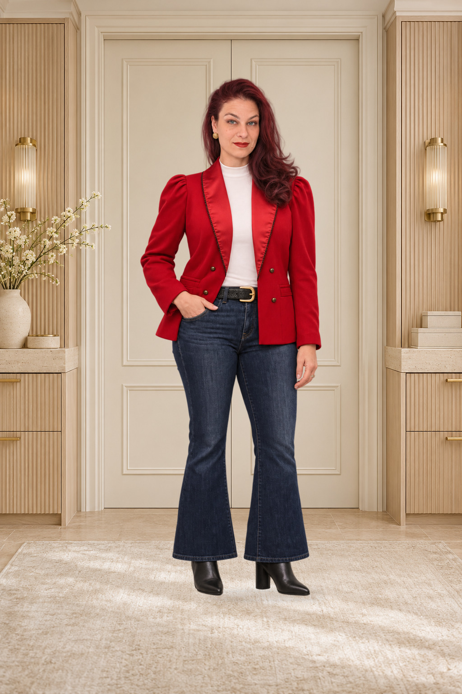

Red lapels over winter white
An ivory V-neck and white wide-leg trousers give the blazer a clean backdrop. I leave it open so the narrow dark trim draws a line down the front.

Gathered red shoulders and dark flares
Dark flares pick up the blazer’s lapel trim. The sweep at the hem balances the gathered shoulders, with just the toe of a boot showing.
Two shades of green
Emerald takes the lead in both looks. A charcoal jacket gives it structure. A matching belt lets the jumpsuit carry the color on its own.

Emerald and charcoal tailoring
I tuck the black tank and wear the charcoal jacket open. The gold buckle gives the eye a place to land between the dark top and the emerald trousers.

Green jumpsuit with tan points
The petal sleeves are the detail I want to see first. A side-tied belt keeps the waist soft, and tan pumps leave a little skin below the cropped hem.
Let the fabric move
A loose ivory tie and a sweeping teal skirt give two outfits their shape. Each needs just one detail to catch the light.

Cornflower and an ivory tie
I let the ivory tie fall clear of the belt. Periwinkle pumps carry the blue of the trousers all the way to the floor.

Black turtleneck and teal sweep
A close-fitting black turtleneck gives the glossy skirt room to flare. Tucking it at the shaped waistband keeps the front of the skirt smooth.